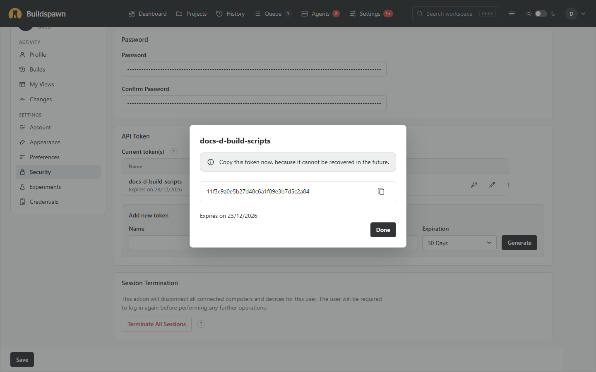
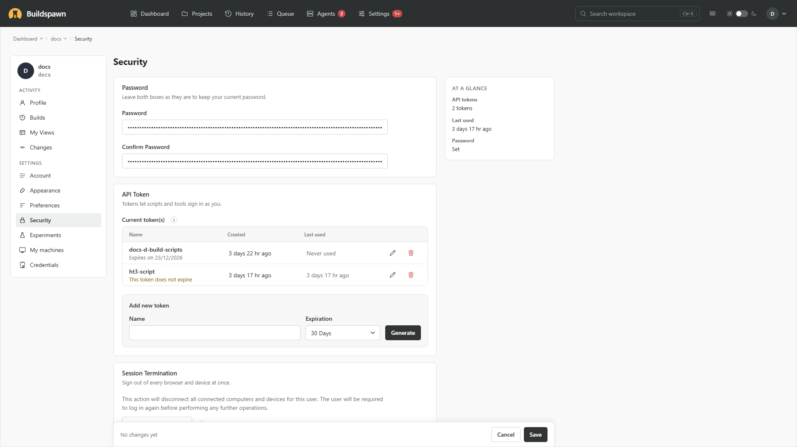

API tokens
An API token lets a script, a tool or the terminal program sign in as you, without your password.
An API token is a long random code that stands in for your password. Use one whenever something other than your browser talks to Buildspawn:
- the terminal program, to stop builds, cancel queue items or take agents offline;
- scripts that read the server's data, for example the status of the last build;
- scripts or other tools that start builds.
A token has the same permissions as the user who made it. You can have several tokens, one for each script, and revoke one without touching the others.
Create a token
- Click your initial at the right of the top bar and choose Security.
- Under API Token, find Add new token.
- Type a Name that says where the token is used, for example
build-scriptsorterminal on studio-pc. - Choose an Expiration: 7, 30, 60 or 90 days, Custom to pick a date, or No Expiration.
- Click Generate.
- Click the copy button beside the token and store it somewhere safe, such as a password manager. Then click Done.

Buildspawn shows the token only once and can't show it again later. If you lose it, revoke it and make a new one.
The copy button works only over HTTPS, or when you open Buildspawn on the same computer. On a plain HTTP address, select the token and copy it by hand.
Use a token
Sign in with your user name and the token in place of the password. Most tools call this basic authentication.
In the terminal program
- Save a text file with one line: your user name, a colon and the token.
sam.lee:11f3c9a0e5b27d48c6a1f09e3b7d5c2a84 - Make the file private, so only you can read it. On Linux and macOS:
chmod 600 ~/.buildspawn-token. - Start the program with the file:
Or setbuildspawn --token-file ~/.buildspawn-tokenBUILDSPAWN_TOKEN_FILEto the file's path once, in your shell profile.
In scripts
Add api/json to the address of most pages to get their data as JSON. Pass the user name and token with the request:
# The result of the last build of a build configuration
curl -u sam.lee:TOKEN "http://buildserver:8080/job/Game/job/Windows%20Build/lastBuild/api/json?tree=number,result"
# Start a build
curl -X POST -u sam.lee:TOKEN "http://buildserver:8080/job/Game/job/Windows%20Build/build"
# Start a build with parameters
curl -X POST -u sam.lee:TOKEN "http://buildserver:8080/job/Game/job/Windows%20Build/buildWithParameters" \
--data-urlencode "platform=Win64"# PowerShell
$pair = "sam.lee:$env:BUILDSPAWN_API_TOKEN"
$auth = [Convert]::ToBase64String([Text.Encoding]::UTF8.GetBytes($pair))
Invoke-RestMethod -Headers @{ Authorization = "Basic $auth" } `
-Uri "http://buildserver:8080/job/Game/job/Windows%20Build/lastBuild/api/json"Requests made with a token don't need any other security header, so a POST works as shown.
Keep tokens out of scripts that are checked in to version control. Store the token as a secret parameter or in Vault, and read it from an environment variable. See Secrets and Vault.
See and rename tokens
The Current token(s) table on the Security page lists your tokens. For each one it shows the name, the expiry date, when it was created and when it was last used.

Click the pencil to rename a token.
A token that says Never used for a long time is probably not needed. Revoke it.
Revoke a token
- Open Security from your account menu.
- In the Current token(s) table, click the red bin icon beside the token.
- Confirm with Revoke.
The token stops working at once. Anything that still uses it can no longer connect, so give those scripts a new token first.
When a token expires, it stops working in the same way. Make a new one and put it in place of the old one.
Tips
- Use one token per script or machine. Then you can revoke one without breaking the rest.
- For scripts that run on their own, consider a separate user with only the permissions the script needs. See Users and permissions.
- The administrator controls tokens on Settings › Security › API Token: whether old-style tokens are made for new users or on request, and whether the date of last use is kept. See Security settings.
- The Security page of a user is described on User settings. People who sign in with Entra ID or SAML make tokens in the same place, and the token belongs to their user.
- Terminate All Sessions, at the bottom of the Security page, signs you out on every browser and device. It does not revoke tokens.